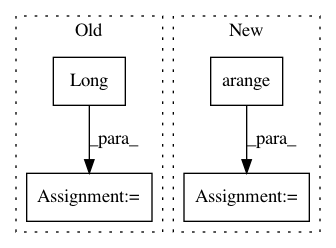

5980bd68fcd65ffe90fe560ff7db3f01e861426e,torch_geometric/transform/graclus.py,,normalized_cut,#Any#Any#,42
Before Change
// Append singleton values to the end.
singleton = cluster == -1
index = torch.arange(count, singleton.sum() + count).long()
cluster[singleton] = index
return cluster, torch.cat([cluster, index], dim=0), singleton
After Change
singleton = cluster == -1
num_singletons = singleton.sum()
if num_singletons > 0:
index = torch.arange(count, count + num_singletons).long()
cluster[singleton] = index
cluster_full = torch.cat([cluster, index], dim=0)
return cluster, cluster_full, singleton
else:
return cluster, cluster, singleton
In pattern: SUPERPATTERN
Frequency: 3
Non-data size: 4
Instances
Project Name: rusty1s/pytorch_geometric
Commit Name: 5980bd68fcd65ffe90fe560ff7db3f01e861426e
Time: 2017-11-02
Author: matthias.fey@tu-dortmund.de
File Name: torch_geometric/transform/graclus.py
Class Name:
Method Name: normalized_cut
Project Name: cornellius-gp/gpytorch
Commit Name: f76a4dabb4cd38ee58d01a35c5b511e224d060d2
Time: 2018-09-17
Author: gpleiss@gmail.com
File Name: gpytorch/lazy/sum_batch_lazy_tensor.py
Class Name: SumBatchLazyTensor
Method Name: _get_indices
Project Name: rusty1s/pytorch_geometric
Commit Name: 6437d4e459e0f56e059ef0400c03852ef91b8a32
Time: 2018-08-13
Author: matthias.fey@tu-dortmund.de
File Name: torch_geometric/nn/pool/consecutive.py
Class Name:
Method Name: consecutive_cluster